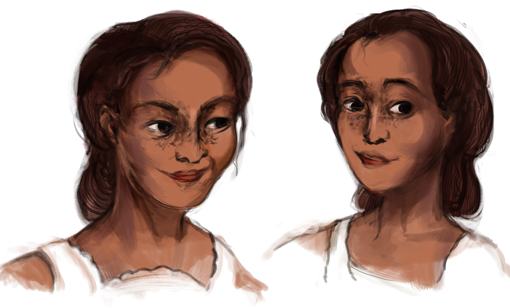
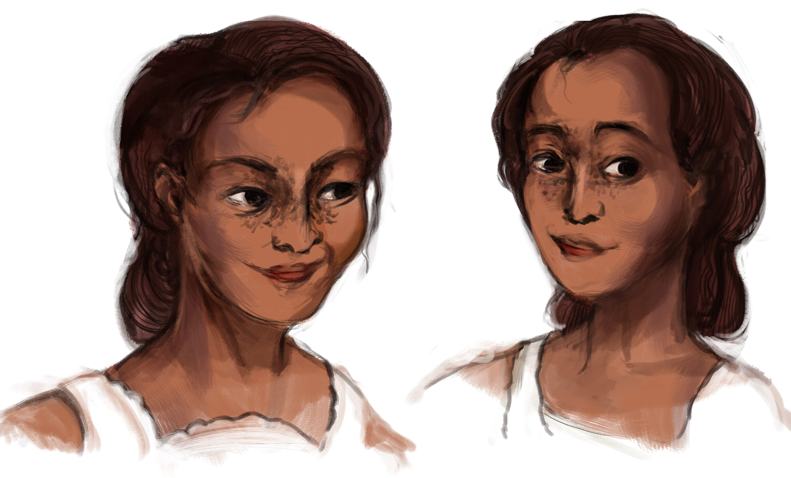
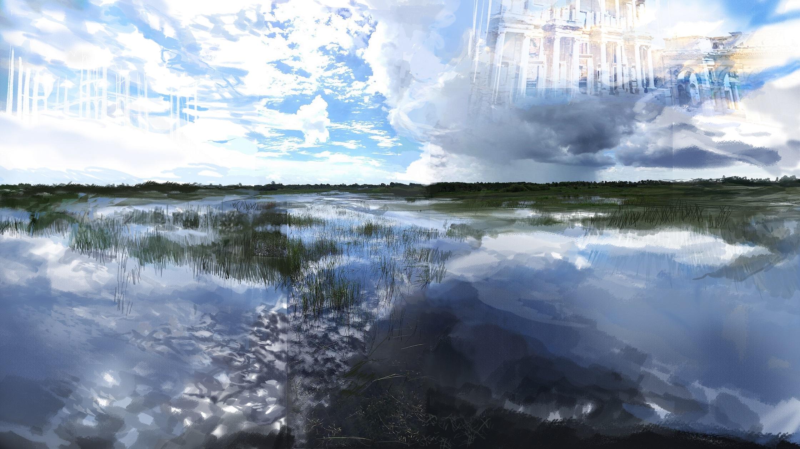

The land of Jiankou is a world I developed from 2017 to 2018, based on a fantasy Florida, where the elite live in the skies of the 2nd Perimeter and monsters roam the lands below in the Heartlands. Communication between the 2nd Perimeter the Heartlands is severed by the Sky Gang, pirates with jets in the skies. The Heartlands is plagued with sink dwellers, giant scorpians, invasive species, pythons, and horror stories.
King of the Merchants is a fairy tale within the land of Jiankou about the king who resides in the second perimeter.
Environments
Here is a film set in the Snowbirds world, about a monster that lurks in the worlds.
Deathface from Catherine Chen on Vimeo.
Breathe is a short film I made in 2016, inspired by the tall mountains in the Fujian province and buildings I saw outside the bullet train in China.
Breathe from Catherine Chen on Vimeo.
In Los Angeles, the greatest artists are superheroes who fight evil in the Guild of Visual Arts (GOVA) and other schools, such as League of Thespians, the Association of the Creative Arts, etc. Roadkill, a street cat, wants nothing more than to be part of this celestial human society.

Black Dragon is a story idea based on the Chinese fable, "Paint the Dragon Eyes" - by Zhang Sengyou. Below are the different ideations it went through in an attempt to explore and establish the world.
Stupor is a comic series I made for fun that explores the Black Dragon idea.

This is a more detailed version of the ideation for Black Dragon.

This section is a showcase of very early Black Dragon concepts, for both premise and main characters.
If you are looking for someone who is motivated, that’s me! I hope that my portfolio website will show you my intense passion for games, art, and animation.


{kind=link}
{kind=link}
{kind=link}
{kind=link}
{kind=link}
{kind=link}
{kind=link}
{kind=link}
{kind=link}
{kind=link}